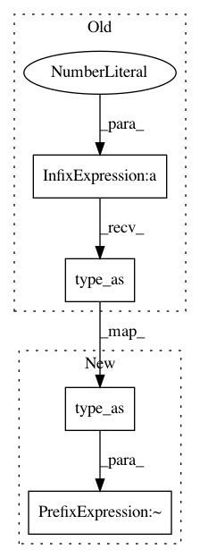

977e38de2e77d46b36ace96b4c76910174f77ad7,models/face_shift_net/face_shiftnet_model.py,FaceShiftNetModel,set_gt_latent,#FaceShiftNetModel#,185
Before Change
if self.opt.add_mask2input:
// make it 4 dimensions.
// Mention: the extra dim, the masked part is filled with 0, non-mask part is filled with 1.
real_B = torch.cat([self.real_B, (1 - self.mask_global).expand(self.real_B.size(0), 1, self.real_B.size(2), self.real_B.size(3)).type_as(self.real_B)], dim=1)
else:
real_B = self.real_B
self.netG(real_B) // input ground truth
After Change
if self.opt.add_mask2input:
// make it 4 dimensions.
// Mention: the extra dim, the masked part is filled with 0, non-mask part is filled with 1.
real_B = torch.cat([self.real_B, (~self.mask_global).expand(self.real_B.size(0), 1, self.real_B.size(2), self.real_B.size(3)).type_as(self.real_B)], dim=1)
else:
real_B = self.real_B
self.netG(real_B) // input ground truth
In pattern: SUPERPATTERN
Frequency: 4
Non-data size: 4
Instances
Project Name: Zhaoyi-Yan/Shift-Net_pytorch
Commit Name: 977e38de2e77d46b36ace96b4c76910174f77ad7
Time: 2020-06-14
Author: yanzhaoyi@outlook.com
File Name: models/face_shift_net/face_shiftnet_model.py
Class Name: FaceShiftNetModel
Method Name: set_gt_latent
Project Name: Zhaoyi-Yan/Shift-Net_pytorch
Commit Name: 977e38de2e77d46b36ace96b4c76910174f77ad7
Time: 2020-06-14
Author: yanzhaoyi@outlook.com
File Name: models/face_shift_net/face_shiftnet_model.py
Class Name: FaceShiftNetModel
Method Name: set_input
Project Name: Zhaoyi-Yan/Shift-Net_pytorch
Commit Name: 4e611ef928fdeb52d4fd5521a6f2b2d3bf3fb4a5
Time: 2019-12-21
Author: yanzhaoyi@outlook.com
File Name: models/shift_net/shiftnet_model.py
Class Name: ShiftNetModel
Method Name: set_gt_latent
Project Name: Zhaoyi-Yan/Shift-Net_pytorch
Commit Name: 4e611ef928fdeb52d4fd5521a6f2b2d3bf3fb4a5
Time: 2019-12-21
Author: yanzhaoyi@outlook.com
File Name: models/shift_net/shiftnet_model.py
Class Name: ShiftNetModel
Method Name: set_input